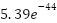
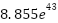

By Hernandez, Aaron, Benton High School, Class 2026
Within the boundaries of physics, time is practically an illusion. Time is perceived at a relativistic point, as the process of change: motion, reactions, and acceleration. All of which are products of the perception of time. Time is the parent from which offspring rates of change can be derived. We can use time as a continuum to model our data and analyze changes in the field of Physics, but how can we control it completely as a separate entity, a variable, a fundamental property that propels the expansion, destruction, creation, and perpetuation of reality?
We think of time as a continuum, points of infinitesimal moments of action that occur and propagate for most particles and systems. Exceptions to these rules include particles whose velocity naturally approaches near the speed of light, and therefore experience time dilation of the maximum degree. If we were to experience the perspective of these particles we would see that from the time they are created to the moment they decay and fizzle out, we would experience both moments at the same instant, for any object to travel at the speed of light, time is no longer a consideration relative to the outside world. As derived from Einstein’s theory of General Relativity, it is possible to experience a pseudo-time travel into the future. Objects of two differing velocities will experience time differently, more specifically, an object traveling closer to the speed of light will experience time more slowly relative to the other slower object. Over a long period, the effects of this can be observed, of course in the Rossi-Hall Experiment and those similar, the effects of time dilation on the relativistic decay muons, which were thought to be mesons, in the atmosphere.
Now let's believe in the inverse of this relationship between the velocity of an object relative to other objects. Now let's be clear, idea of using a negative mass velocity is foolish, however, that does not disprove their existence. In these proposals however such ideas are not going to be mentioned as only realistic interpretations of how the universe functions under odd functions and effects.. First, there are the many complications that come with the travel into the past in logical thought examples. As a disclaimer these rules apply to the macroscopic scale, quantum microscopic objects behave erratically under extreme conditions and are more prone to this property, however, they will be used as a scale for experimental ideas and likewise.
Paradoxes within the world of science have only one known solution, they cannot be. If I were to travel back in time and end my grandfather’s life before he had my father, then I would not have been. Therefore without my existence, I would have never traveled back in time to end my grandfather, and therefore I would have been conceived. This is an example of the Novikov self-consistency principle as well as Larry Niven’s Law of Conservation of History. This is a paradox that undermines the existence of time travel into the past, for if past travel was possible, then this law would be violated and would not constitute grounds for proof of past travel. It is a logical calamity which cannot be. However, I believe past travel is possible and has a method that would, hopefully, unveil this enigma.
Definition of ⋈
To travel back into the past without creating a paradox within a system of change, the amount of time we travel backward must have a limit, we will call this the Hernandez Limit ⋈. This limit defines the maximum amount of time allowed to be traveled backward, anything past the limit is non-real, and therefore cannot exist. For traversing time forward, there is no limit, however. The limit ⋈ can also define a new way to think of time. In our modern models, time is represented as a continuous variable attribute, however, what if it was discrete? That is, it has a set amount of time that traverses, like frames per second in a video game. ⋈ would be a value that defines how many of these frames, or moments, an object can traverse backward. Hypothetically let's say that the Planck Time or about  seconds is our desired increment at which each frame lasts within our reality. This would mean for every second that passes, about  frames or moments pass. So if the ⋈ limit is how many of these frames we may pass then it must an amount that does not create a paradox of any form, how can we calculate this limit then? Is it unique to every object? Is it variable?
Definition of ᛃ
Let's say hypothetical particle A is capable of traversing a given amount of time backward. Particle A cannot stop itself from traveling backward in time and therefore it must have no connection to itself or any other particle that may stop particle A initially from going back in time. Particle A must travel to a point in a different time and space. Let's scale this up, If I were to go back in time, if I try to prevent my creation, I will stop by the ⋈ limit, If I travel to a point too close to the moment I traveled back in time, then my position will change greatly from my original position from the moment I traveled back in time. Therefore, this prevented me from interacting with myself in either example. So both the ⋈ is variable on the object traversing time, and my position from the moment I travel back in time is a value that changes given a selected time I wish to traverse to. ⋈ a limit to how far I can travel in time and our new variable ᛃ, which represents how much my position changes given how close the moment I chose to travel back to is to the moment I travel back in time. Like the definition of ⋈ we must also consider how variable this quantity is, and how to calculate it. Given that these values are dependent on the amount of time between the moment an object travels back and the moment the object arrives, these variables, ⋈ and ᛃ, are the output of a given function, so to find them we must find a way to plot their values over a hypothetical scenario, as well as experiment with particles sensitive to unique fields and such.
Calculating such Values:
Realities and traversing discrete time forward:
Let us imagine the universe as a quantum object. It is neutral in the sense that multiple forces act and react with each other maintaining an equilibrium. Like a proton capturing an electron to become a neutron. Now apply the regular rules of quantum mechanics to this object. Before the universe can be “Observed” in the current moment, it lives in an infinite number of states within the context of the future. The future is therefore an infinite number of possible states that could happen given certain variables are met in the present. To travel into the past would mean to set the whole universe back into a quantum superposition and for you to enter a reference frame that has already occurred. However to undo the entire universe’s state would require a tremendous amount of energy, therefore, it would seem more plausible for this time travel back into time to be more of a transport into a reality that takes place before the time of the travel. Placing an object into another preexisting reality out of an infinite set would require less energy, and therefore permit time travel in the case that multiple realities exist. If we can understand how a wave function of an almost limitless number of possible states collapses onto one, we can further our advances by opening the gateways of space-time and travel to another reality, further back in time.
Notes for future review:
Calculate ᛃ and ⋈. And prove that multiple universes exist.